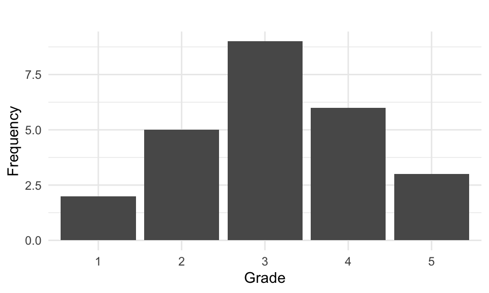

5 Describing a Dataset
Descriptive statistics is the foundation of data analysis, helping us summarize, visualize, and interpret data before diving into deeper statistical methods. This section explores how to describe datasets using tables, charts, and frequency distributions for both qualitative and quantitative variables.
Before analyzing data, it’s essential to understand its nature. The choice of tables, charts, or summary statistics depends on:
- Whether the variable is qualitative (categorical) or quantitative (numerical).
- If quantitative, whether it is discrete (finite values) or continuous (measurable on a scale).
- The level of measurement of the variable (nominal, ordinal, interval, or ratio).
- The information or insights we want to highlight or understand from the data.
5.1 Describing Qualitative Variables
Qualitative (categorical) variables represent data grouped into distinct categories, such as gender, marital status, or election participation. These variables are best summarized using frequency tables and graphs such as bar charts and pie charts.
5.1.1 Frequency Tables for Qualitative Data
A frequency table lists the categories of a variable along with their corresponding counts (absolute frequency) and percentages (relative frequency). Assume we surveyed 300 people about their favorite hot beverage and found that 60% prefer coffee and 40% prefer tea. This preference distribution, also presented in the table below, will be used as a running example in the following.
| Preference | Count (\(f_i\)) | Percentage (\(f_i\) in %) |
|---|---|---|
| Tea | 120 | 40% |
| Coffee | 180 | 60% |
| Total | 300 | 100% |
The relative frequency is calculated as:
\[\frac{120}{300} \times 100 = 40\%\]
and shown in the third column.
5.1.2 Pie Chart
Pie charts are one of the most commonly used tools for representing categorical data in a simple, visual format. They break down a whole into proportional slices, making it easy to see relative differences between categories at a glance. Whether you’re comparing sales across different product categories, analyzing survey responses, or breaking down a budget, a well-made pie chart provides an intuitive way to present proportions.
Each slice represents a category’s percentage of the total, with the entire pie equaling 100%. The size of each slice is determined by the proportion of the category it represents. For example, if 60% of survey respondents prefer coffee over tea, that category would take up 60% of the pie chart, or 60% of 360°, that is \(0.60 × 360° = 216°\) of the full circle. Pie charts are particularly effective when comparing a few distinct categories but lose clarity when too many slices are included.
While a standard pie chart is a great way to visualize data, 3D pie charts are the dark side of data visualization. They may look fancy, but they distort proportions, making it difficult to accurately compare slice sizes. Due to the perspective effect, some slices appear larger or smaller than they actually are, leading to misleading interpretations. In short: if you want your data to be clear and not just flashy, stick to 2D pies - your audience will thank you.
5.1.3 Bar Chart
Bar charts are a great way to visualize qualitative data, making it easy to compare different categories. Each category is represented by a bar, with the height corresponding to its frequency or percentage. For example, a bar chart would clearly display the difference between coffee and tea lovers, making it easy to interpret at a glance. Unlike pie charts, bar charts work well even when multiple categories are involved, ensuring your audience can quickly grasp the data - without any risk of 3D chart-induced confusion!
5.1.4 Contingency Tables
When we have observations on two qualitative variables, we can create two separate frequency tables. However, if we want to study the relationship between the two variables, we use a contingency table.
A contingency table organizes paired observations, showing the frequency distribution across the two categorical variables.
For example, consider the following data where individuals are classified into two groups based on their marital status (Married (M) or Not Married (NM)) and their voting behavior (Voted (1) or Did Not Vote (0)). This results in four possible outcome combinations:
- (M, 0) - Married, Did Not Vote
- (M, 1) - Married, Voted
- (NM, 0) - Not Married, Did Not Vote
- (NM, 1) - Not Married, Voted
Assume the first four observations are: (G, 0), (EG, 1), (G, 1), (G, 1) Which we create the following table over:
| 0 (Did Not Vote) | 1 (Voted) | |
|---|---|---|
| M (Married) | ✔️ | ✔️✔️ |
| NM (Not Married) | ✔️ |
Once all observations have been recorded, we can create the following contingency table:
| Did Not Vote | Voted | Total | |
|---|---|---|---|
| Married | 54 | 1496 | 1550 |
| Not Married | 85 | 628 | 713 |
| Total | 139 | 2124 | 2263 |
This table displays the distribution of voting behavior by marital status, where we can analyze differences between the groups.
Marginal Distributions
A marginal distribution summarizes the totals for each row and column in a contingency table. This helps us understand the overall distribution of each variable separately.
For example, the absolute and relative marginal distributions for marital status is shown below:
| Marital Status | Count | Percentage (%) |
|---|---|---|
| Married | 1550 | 68.5% |
| Not Married | 713 | 31.5% |
| Total | 2263 | 100% |
Similarly, the absolute and relative marginal distributions for voting behvaior is shown below:
| Voting Behavior | Count | Percentage (%) |
|---|---|---|
| Did Not Vote | 139 | 6.1% |
| Voted | 2124 | 93.9% |
| Total | 2263 | 100% |
These tables summarize how many people are in each category without considering the second variable.
Conditional Distributions
To compare voting behavior between married and non-married individuals, we calculate row percentages.
| Did Not Vote (%) | Voted (%) | Total (%) | |
|---|---|---|---|
| Married | 3.5% | 96.5% | 100% |
| Not Married | 11.9% | 88.1% | 100% |
This table shows the conditional distribution of voting behavior, given marital status.
Among married individuals, 1496 × 100 = 0.965= 96.5% voted while 54 × 100 = 0.035 =3.5% did not.
Among non-married individuals, 88.1% voted, while 11.9% did not.
By comparing these row percentages, we can see that married individuals were more likely to vote compared to non-married individuals. We have calculated the percentages horizontally but compare the percentage values in the vertical columns. We can also compute column percentages instead of row percentages if needed.
To determine whether a relationship exists between voting behavior and marital status, we compare conditional distributions. Since the voting percentages differ between married and non-married groups, we conclude that marital status influences voting behavior. If the two variables were independent, the percentages in the columns would be nearly the same. The fact that they differ suggests an association between the two variables.
5.2 Describing Quantitative Variables
Unlike qualitative data, which can be subjective and harder to categorize, quantitative data enables direct comparisons, making it easier to identify patterns, test hypotheses, and make data-driven decisions.
Quantitative variables are numeric and can be either discrete (specific values, such as test scores) or continuous (measured on a scale, such as weight). These variables are best summarized using frequency tables, histograms, and cumulative distributions.
5.2.1 Frequency and Cumulative Frequency Tables
Example 5.1: Mathematics Grade
We begin by examining a discrete variable with a small number of observations. Assume the mathematics grades (ranging from 1-5) of 25 students are:
5 4 1 4 4 3 2 3 3 3 4 2 3 1 3 3 5 4 2 2 2 4 3 5 3When data is presented in this way, it is referred to as ungrouped data. Let:
- \(x_i\) = observed values, where \(i = 1, \ldots , n\)
- \(f_i\) = frequency of the \(i\)-th variable value, where \(i = 1, 2, \ldots, k\).
For our example here, \(n = 25\) (total observations) and \(k = 5\) (five distinct values of the variable “Mathematics Grades”).
Let’s summarize this data by counting how many we have in each grade category:
| Grade (\(x_i\)) | Count | Frequency (\(f_i\)) |
|---|---|---|
| 1 | ✔️✔️ | 2 |
| 2 | ✔️✔️✔️✔️✔️ | 5 |
| 3 | ✔️✔️✔️✔️✔️✔️✔️✔️✔ | 9 |
| 4 | ✔️✔️✔️✔️✔️✔️ | 6 |
| 5 | ✔️✔️✔️ | 3 |
| Total | 25 |
The sum of all frequencies equals the total number of observations: \(\sum_{i=1}^{k} f_i = n\).
We have created a frequency table by grouping the data into categories which can be visualized using a bar chart:

The cumulative frequency tells us how many observations are less than or equal to a given value.
| Score (\(x_i\)) | Absolute Frequency (\(f_i\)) | Cumulative Frequency (\(F_i\)) |
|---|---|---|
| 1 | 2 | 2 |
| 2 | 5 | 7 |
| 3 | 9 | 16 |
| 4 | 6 | 22 |
| 5 | 3 | 25 |
Cumulative frequencies are often displayed using a cumulative step graph:
5.3 Histograms
When dealing with a continuous variable or a discrete variable with many values, it is common to create class intervals and then display frequencies in a frequency table or graph.
Example 5.2: Candy Bar Weights
We have observed 40 candy bars of a specific brand and recorded their weighs which are given in the following in ascending order:
20.5 20.7 20.8 21.0 21.0 21.4 21.5 22.0 22.1 22.5
22.6 22.6 22.7 22.7 22.9 22.9 23.1 23.3 23.4 23.5
23.6 23.6 23.6 23.9 24.1 24.3 24.5 24.5 24.8 24.8
24.9 24.9 25.1 25.1 25.2 25.6 25.8 25.9 26.1 26.7Since weight is a continuous variable, we must group the observations into classes. We choose five class intervals, each with a width of 1.3 grams, starting from 20.4 grams:
- Class 1: 20.4 - 21.6
- Class 2: 21.7 - 22.9
- Class 3: 23.0 - 24.2
- Class 4: 24.3 - 25.5
- Class 5: 25.6 - 26.9
We can then create a frequency table as before:
| Weight Range (grams) | Frequency (\(f_i\)) |
|---|---|
| 20.4 - 21.6 | 7 |
| 21.7 - 22.9 | 9 |
| 23.0 - 24.2 | 9 |
| 24.3 - 25.5 | 10 |
| 25.6 - 26.9 | 5 |
| Total | 40 |
We then can visualize the frequency distribution using a histogram:
Generally, A histogram represents continuous data by grouping values into intervals, with bar heights corresponding to frequencies.
To determine how many observations fall below a given value, we calculate the cumulative frequencies as before and visualize using a step chart.
| Weight Range (grams) | Absolute Frequency (fi) | Cumulative Frequency (Fi) | Relative Frequency (%) | Cumulative Relative Frequency (%) |
|---|---|---|---|---|
| 20.4 - 21.6 | 7 | 7 | 17.5 | 17.5 |
| 21.7 - 22.9 | 9 | 16 | 22.5 | 40.0 |
| 23.0 - 24.2 | 9 | 25 | 22.5 | 62.5 |
| 24.3 - 25.5 | 10 | 35 | 25.0 | 87.5 |
| 25.6 - 26.9 | 5 | 40 | 12.5 | 100 |
| Total | 40 | 40 | 100% | 100% |
5.4 Stem-and-Leaf Plot
A Stem-and-leaf plot is a compact way to display numerical data while preserving individual values. It organizes data into stems (representing the leading digits) and leaves (the following digits), providing a good display of the distribution.
For example, in the dataset of candy bar weights, a stem-and-leaf plot can show whether weights cluster around a certain value and help identify any inconsistencies. This is shown in the follwing.
We split each value from our candy bar weight dataset into - Stem (e.g., 20, 21, 22, etc.) - Leaf (the decimal part, such as .1, .2, .3, etc.)
The Stem-and-Leaf Table is then given as:
| Stem | Leaf |
|---|---|
| 20 | 5 7 8 |
| 21 | 0 0 4 5 |
| 22 | 0 1 5 6 6 7 7 9 9 |
| 23 | 1 3 4 5 6 6 6 9 |
| 24 | 1 3 5 5 8 8 9 9 |
| 25 | 1 1 2 6 8 9 |
| 26 | 1 7 |
If you tilt your head to the right or rotate the table 90° you get a fairly good view on the distribution of the data. The distribution appears fairly symmetric, with a slight skew toward the higher weights. Overall, the data is well distributed across the entire range, but there is a higher density of observations between 22.0 g and 24.9 g, indicating that the most frequent range appears to be 22 to 24 grams, with many values concentrated in these stems. The least frequent weights occur at the lower (20-21 g) and higher (25-26 g) ends. In a quality control one might check this distribution and note whether a large amount of candy bars end up in the tails of the distribution, thus indicating inconsistent production of candy bars.